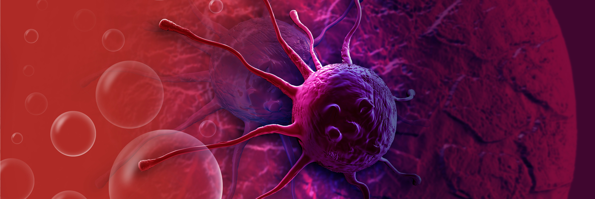

Cáncer
El cáncer es el nombre que se da a un conjunto de enfermedades relacionadas en las que algunas células del cuerpo empiezan a dividirse sin detenerse y se diseminan a los tejidos del derredor.

Causas
Es causado por cambios (mutaciones) en el ADN dentro de las células. Estos cambios pueden ser heredados o causados por factores externos como el tabaquismo, la radiación, sustancias químicas cancerígenas o virus.
Síntomas
Varían según la zona afectada, pero algunos signos generales incluyen:
- Cansancio extremo que no mejora con el descanso.
- Bultos o engrosamiento en cualquier parte del cuerpo.
- Cambios en la piel o en lunares existentes.
- Pérdida de peso o fiebre sin causa conocida.
- Dolor persistente.
Pruebas y exámenes
Las herramientas comunes incluyen pruebas de laboratorio (sangre y orina), estudios con imágenes (tomografía, ecografía) y la biopsia, que es la extracción de una muestra de tejido para su análisis en el laboratorio.
Tratamiento
Existen muchos tipos de tratamiento dependiendo del tipo de cáncer y su etapa. Los más comunes son la cirugía, la quimioterapia, la radioterapia, la inmunoterapia y la terapia dirigida.
Expectativas (pronóstico)
El pronóstico ha mejorado significativamente en las últimas décadas gracias a la detección temprana. Muchos tipos de cáncer son ahora curables o se pueden manejar como enfermedades crónicas.